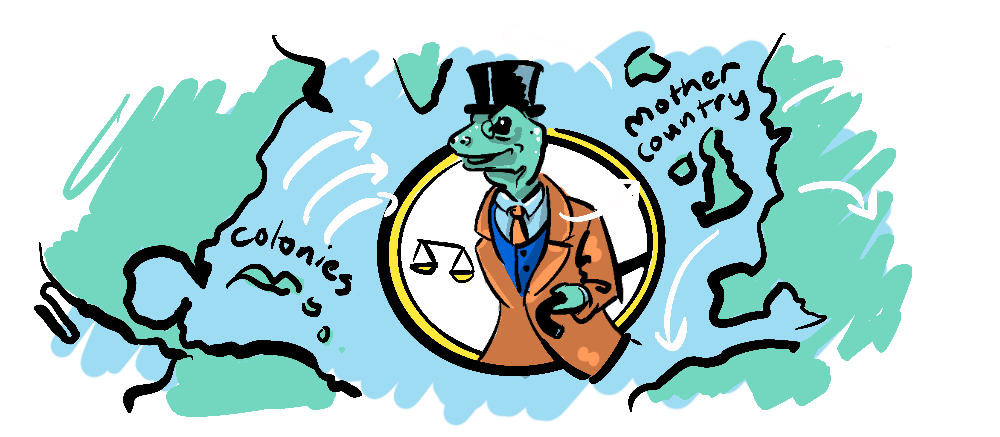

Oliver Stone's "Wall Street" is an interesting illustration of Capitalism, because it's a story told by left-wing progressives about their political opponents, so it says something about both sides.
Despite his antithetical position, Stone, the son of a Wall Street stock broker, along with screenwriter Stanley Weiser, intensely researched the stock exchange. They sought to know their subject inside and out before delivering what they hoped to be a burning critique of predatory Capitalism. But as it turns out they may have pushed too far, straying into caricature when Gordon Gekko claims that Capitalism is a zero-sum game. This would ultimately backfire in the real world.
The traditional view of capitalism is characterised by Adam Smith when he writes:
"It is not from the benevolence of the butcher, the brewer, or the baker that we expect our dinner, but from their regard to their own interest."
The logic of the market is one where self-interested parties can mutually benefit by trading what they produce in surplus for what they lack. Capitalism is little more than a market economy, with an emphasis on capital investment, which can, given the right parameters and regulations lead to the growth of business and innovation.

Taking this definition, it's difficult to make a case that Capitalism is zero-sum. It is, at its core, about mutual benefit, which can be achieved even in a competitive environment. So, I'm not making a political statement but a factual one, when I say that Capitalism is a non-zero-sum game.
A system sometimes conflated with Capitalism is Mercantilism, which concerns the comparative advantage different countries have over one another. This, in contrast, is a zero-sum game. In the anarchic field of International Relations, powerful nations have historically been able to bully others, effectively controlling the free market in a way that benefits its most powerful contributors. This is actually contrary to free-market principles.
The fact that Capitalism is non-zero-sum doesn't mean it is necessarily positive-sum. An economy that gets out of balance can produce very negative results (which are still non-zero).
So, it's good to develop an appreciation for what a capitalist market economy does well and what it doesn't.
PROS
- Creates value through labour with prices that are naturally set through supply and demand.
- Involves the allocation of credit—an indication societal trust according to Yuval Noah Harari.
- Optimises productivity, resource utilization and technology.
CONS
- Can not be relied on to provide adequate social services, including healthcare and education.
- Can be expected to run at a cost to externalities like the environment.
- Can produce products that are detrimental to well-being.
It is clear, given a short list of pros and cons that Capitalism has benefits, but requires regulation and a mechanism to provide social services.
While capitalism is non-zero-sum, by creating a straw-man of Gordon Gekko, "Wall Street" ironically inspired a whole new generation of ambitious young capitalists to see his zero-sum conception of capitalism as the ideal, modelling themselves on him, and espousing his maxim...

As Gillian Tett of the financial times points out in Capital in the 21st Century
When Gordon Gekko was seen on film saying, "Greed is good", that was intended to be a howl of protest against the system. But such had the cultural fabric changed, that actually for some people coming through universities applying to join investment banks, that phrase "Greed is good" actually became a license to pursue riches.
In summary of its documentary A Film and its Era: Wall Street, Euroarts states...
Gordon Gekko, the predator, became an icon for generations of traders, bankers and investors, to the point that his famous tirade on the huge virtues of greed—"greed is good" – was used word for word by the former President of the United States, Donald Trump.
Do I mean to lay responsibility for Ayn Randian free-market dogmatism and the state of today's crony capitalism at the hands of a misguided filmmaker? Not exactly. As Tett mentions "the cultural fabric [had] changed" already by 1987 so that the message of "Wall St" was interpretted in just such a way. But I do think the more we approach Capitalism as a zero-sum game (whether playing the game or criticising it) the worse it functions.
We have to remind ourselves that any system is not an end in itself but a means to provide greater well-being, and that when the economic markers of success like the Dow Jones or GDP become decoupled from human well-being, human well-being should trump these markers. Well-being can be lost or made, it isn't simply transferred. So, we must ask if the system is functioning in a zero-sum or a non-zero sum way? The further we can push it towards non-zero the better.
My intention with this post has been to give an unbiased account of Capitalism as it relates to non-zero-sum games while addressing problematic interpretations of it. My bias is always toward non-zero-sum solutions, whether they come from a free market or from regulation, taxation and social spending—my political view is (boringly) that all those elements are important.

I'm always interested in how others view these political issues, and particularly what underlying motivations move people, so please indulge me and share yours in the comments.